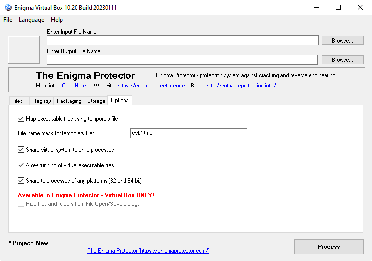

Share virtual system to child processes - shares virtual system (files and registry) to all child processes which current process creates (even if these processes are not packed with Enigma Virtual Box)
Map executable files using temporary file - this option is made for compatibility of particular .exe and .dll files to be virtualized. Also, using this option guaranties that virtual exe files will be run well on any computer. Packed application will create temporary files in Windows temporary folder, but these files are being removed time to time by the program itself and they do not contain any information inside (just empty files), so no actions are needed to clear it up or anything else.
File name mask for temporary files - allows to specify the mask for a file name of the files that will be created in temporary folder by using of the option "Map executable files using temporary file". Mask may contain an asterisk symbol to generate random symbols instead of it. If no asterisk symbol is defined, random symbols will be appended to mask. If mask is not specified (or is invalid), the default mask "evb*.tmp" is used.
Allow running of virtual executable files - option allows to run virtual executable files. If option is disabled, any attempts to run virtual executable file will fail. If virtualized software does not run virtual files and does not need to share virtual system to child processes, then this option and option Share virtual system to child processes can be disabled, this allows to reduce size of the packed file.
Share to processes of any platform (32 and 64 bit) - if option is enabled (together with options "Map executable files using temporary file" and "Allow running of virtual executable files"), protection will be trying to run virtual files (or to share virtual content of child processes) of any platform, independent of the platform of source file. If disabled, protection will be able to run virtual files (or to share to child processes) only of the same platform as source file, for example, if source file is 32 bit then 32 bit virtual files could be running (or shared to 32 bit child processes) only. Enabling this option also enlarges the resulted packed file.
Hide files and folders from File Open/Save dialogs - basically, this option means that enumeration will be disabled for virtual files. Enumeration, apart of File Open/Save dialogs is used by crackers to identify virtual files and possible extract them. To avoid that, it is recommended to use this option for as many files as possible, until the application keeps stable. Please note, this option has critical incompatibility with particular files, so it can't be used for them (this option can be set globally for all files, but also for any separate file and folder in the properties dialog).
Available in Enigma Protector only.